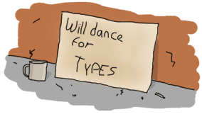

Types (or lack thereof)
Dynamite-strong Typing
Như bạn có thể nhận thấy rằng nhưng vị dụ từ các chương trước đó Starting Out (for real)
, vd về modules và hàm từ Modules và Syntax in Functions,
chúng ta không bao giờ phải khai báo kiểu dữ liệu của một biến hay của một hàm.
Trong khớp mẫu, các đoạn mã của chúng cũng không không phải khai báo để biết nó lên khớp với kiểu nào.
Bộ {X,Y} có thể khớp cùng với giá trị {atom, 123} hay {"A string", <<"binary stuff!">>},
{2.0, ["strings","and",atoms]} hay bất cứ thứ gì.
Khi không khớp, nó sẽ ném ra một lỗi nhưng chỉ xảy ra khi chạy đoạn mã đó.
Đây là bởi vì Erlang là ngôn ngữ lập trình dynamically typed: do đó các lỗi sẽ được bắt trong qua trình chạy ( runtime ).
Nếu việc thực thi đoạn mã có khả năng gây lỗi, trình biện dịch cùng không phải lúc nào cũng thông báo về lỗi từ đoạn mã đó, như vi dụ trong Starting Out (for real)'s "llama + 5".
điểm tiếp xức One classic friction point giữa between các đề xuất của static and dynamic typing là tính an toàn, tin cậy khi viết phần mềm. ý tưởng thường xuyên được đề xuất là sử dụng good static type systems và trình bình dịch sẽ bắt tất các lỗi trong code tại thời điẻm biên dịch trước khi nó được thực hiện trong code . Vì vậy, các ngôn ngữ statically typed thương được nhin nhận là an toàn hơn các ngôn ngữ dynamic typed. Có thể điều này chính xác khi so sánh với một số ngôn ngữ dynamic typed khác, Tuy nhiên đó không phải là điều tương tự trong Erlang, bởi vì Erlang đã phản chứng ngược lại điều đó. ví dụ tôt nhát chứng mình là thông qua các bản báo cáo vê khả năng luôn sẵn sàng nine nines (99.9999999%) of availability offered on the Ericsson AXD 301 ATM switches, bao gồm hơn một triệu dòng code Erlang. Lưu ý rằng đây không phải là báo cáo chứng minh rằng ko có bất kỳ lỗi nào trong các thành phần trong hệ thống viết bằng Erlang. bản báo cáo này chủ yếu chứng mình việc một hệ thống switch nói chung luôn sẵn sằng làm việc tới 99.9999999% thời gian, kể cả khi có sự cố hỏng hóc, ngắt điện. Đó là bởi vì Erlang được thiết kế dựa trên ý tưởng rằng một lỗi sai gây hỏng trong một thành phần sẽ không ảnh hưởng tới các thành phàn còn lại hay nói các khác không gây lỗi cho toàn bộ hệ thống. Bao gồm cả các lỗi gây ra bởi lập trình viên, lối phần cứng và một số lỗi liên quan tới mạng được giải thích như sau: Ngôn ngữ gồm các đặc tính cho phép bạn phân tán một chương trình tới các node ( máy ảo, ứng dụng) khác nhau, xử lí các lỗi bất ngờ xảy ra và làm cho chương trình luôn chạy ,
không bao giờ nhưng giữa chừng.Nói Một cách ngắn gọn hơn , hầu hêý các ngôn ngữ lập trình và type system có gắng hướng tới việc viết các chương trình ít hoặc không có lỗi ( error-free ), Thì Erlang lại đã áp dụng chiến lượt mà tin rằng bằng bất cứ cách nào các lỗi sẽ xảy ra và sẽ luôn được đảm bảo. dynamic type system không phải là một trở ngại đối với các chương trình cần độ ổn định và độ an toàn. Nghe thì có vẻ giống như một lời tiên chi, nhưng bạn sẽ thấy vậy trong các chương sau.
Chý ý: Dynamic typing được chọn bởi lí do rất đơn giản là hầu hết các nhà thiết kế của Erlang đều là những người có kinh nghiệm với ngôn ngữ lập dynamically typed, do chả có lí do gì mà họ lại không chọn dynamically typed.
đồng thơi Erlang cũng là một strongly typed.
Trong một ngôn ngữ weakly typed, các kiểu dữ liệu sẽ được tự động ngầm định chuyển đổi qua lại.
Nếu như ta gõ 6 = 5 + "1"., sẽ không có bất cứ lỗi nào xảy ra với một ngôn ngữ weakly typed cả vì các kiểu dữ liệu theo tự động được cast lại, và kết quả sẽ có được là
6, nhưng trong Erlang không cho phép điều này, một ngoại lệ về việc sử dụng sai thâm số hay kiểu dữ liệu sẽ được đưa ra:
1> 6 + "1".
** exception error: bad argument in an arithmetic expression
in operator +/2
called as 6 + "1"
Tất nhiên, đôi khi bạn có thể vẫn muốn chuyển các loại kiểu dữ liệu này sang một kiểu dữ liệu khác: vd chuyển từ kiểu chuỗi ( strings ) sang kiểu bit strings để lưu trữ hoặc chuyển từ kiểu số nguyên sang kiểu số thực. Khi đó bạn có thử sử dụng một số hàm trong bộ thư viện chuẩn của Erlang để tường mình thực hiển việc chuyển đổi kiểu dữ liệu.
Type conversions
Tương tự một số ngôn ngữ khác, Erlang cũng cho phép thay đổi kiểu dữ liệu.
Vì nhiều kiểu chuyển đổi không được thực hiện trên Erlang, do đó chúng ta có thể
thực hiện bằng cách sử dụng các hàm xây dựng sẵn trong bộ thư viện chuẩn của Erlang, vì ,
mỗi một hàm sẽ có dạng sau <type>_to_<type> chúng được thực hiện trong module erlang. Dưới đây là một só vd:
1> erlang:list_to_integer("54").
54
2> erlang:integer_to_list(54).
"54"
3> erlang:list_to_integer("54.32").
** exception error: bad argument
in function list_to_integer/1
called as list_to_integer("54.32")
4> erlang:list_to_float("54.32").
54.32
5> erlang:atom_to_list(true).
"true"
6> erlang:list_to_bitstring("hi there").
<<"hi there">>
7> erlang:bitstring_to_list(<<"hi there">>).
"hi there"
Như vậy, Chúng ta sẽ phải We're hitting on a language wart here: because the scheme <type>_to_<type> is used, do đó mỗi khi một kiểu dữ liệu mới được thêm vào ngôn ngữ thì toàn bộ các hàm chuyển đổi kiểu dư liệu xây dựng sẵn ( BIFs ) cũng cần phải thêm vào! Dưới đây là toàn bộ các hàm chuyển đổi trong erlang:
atom_to_binary/2, atom_to_list/1, binary_to_atom/2, binary_to_existing_atom/2, binary_to_list/1, bitstring_to_list/1, binary_to_term/1, float_to_list/1, fun_to_list/1, integer_to_list/1, integer_to_list/2, iolist_to_binary/1, iolist_to_atom/1, list_to_atom/1, list_to_binary/1, list_to_bitstring/1, list_to_existing_atom/1, list_to_float/1, list_to_integer/2, list_to_pid/1, list_to_tuple/1, pid_to_list/1, port_to_list/1, ref_to_list/1, term_to_binary/1, term_to_binary/2 and tuple_to_list/1.
Như bạn thây có rất nhiều các hàm chuyển đổi trong module erlang. Chúng ta sẽ gặp hầu hết chúng ( không phải toàn bộ ) các hàm chuyển đổi xuyên suốt cuốn sách này. mặc dù không nhất thiết phải cần tới tất cả các hàm đó.
To Guard a Data Type
Các kiểu dữ liệu cơ bản trong Erlang tương đôi dễ nhìn nhận và phần, visually: bộ có dấu ngoặc nhọn, danh sách thì sử dụng dấu ngoặc vuông
chuỗi thì đặt trong cặp ngoặc đôi, etc. Và để chắn chắn một kiểu dữ liệu xác định cùng với khớp mẫu :
hàm head/1 sẽ chỉ nhận đầu và là một danh sách, nếu không khi nó khớp với biểu thức ([H|_]) , nó sẽ thông báo lỗi.

Tuy nhiên, chúng ta có một vấn đề với kiểu giá trị số ( numeric ), chúng ta không thể xác được được phạm vi, độ rộng. Vì vậy, chúng ta sử dụng chốt canh như trong các vd về hàm nhiệt độ ( temperature ), độ tuổi cho phép lái xe, etc. Tuy nhiên giờ chúng ta sẽ phải đối mặt với một vấn đề khác. vậy chúng ta làm thế nào để viết một điều kiên chốt canh đảm bảo rằng nó sẽ khớp với một kiểu dữ liệu xác đinh như kiểu số , atom, hay bitstrings ?
Tương tự module erlang cũng cung cấp các hàm để giải quyết vấn này đề này. Các hàm này sẽ nhận một tham số đầu vào và sẽ trả về giá trị true nếu giá trị đó khớp với kiểu dữ liệu mà ta so sánh , ngược lại nó trả về false. Chúng tạo thành một phần của các hàm, được cho phép trong biểu thức chốt canh và được gọi chung là type test BIFs:
is_atom/1 is_binary/1 is_bitstring/1 is_boolean/1 is_builtin/3 is_float/1 is_function/1 is_function/2 is_integer/1 is_list/1 is_number/1 is_pid/1 is_port/1 is_record/2 is_record/3 is_reference/1 is_tuple/1
Các hàm này có thể được sử dụng như bất kỳ các biểu thức chốt canh khác, ở bất cứ chỗ nào mà biểu thức chốt canh được sử dụng.
có thể bạn thắc mắc là vì sao không có hàm mà trả về kiểu dữ liệu như trong một số ngôn ngữ lập trính khác,
(giống như type_of(X) -> Type).
Rất đơn giản để trả lời câu hỏi trên là bởi vì Erlang là ngôn ngữ cần lập trình một cách đúng, chính xác:
bạn chỉ lập trình đói với chương trình mà bạn biết chắc chắn những gì nó sẽ xảy ra. mọi thứ lên xảy ra lỗi sớm nhất có thể .
Mặc dù điều này nghe thật sự điên rồ, nhưng mọi thư sẽ rõ ràng hơn sau khi bạn tới chương
Errors and Exceptions. Cho tới lúc đó, hãy tin tôi.
Lưu ý: type test BIFs constitute more than half of the functions allowed in guard expressions.
phần còn lại của The rest are also BIFs, nhưng chúng không biểu diễn type tests:
abs(Number), bit_size(Bitstring), byte_size(Bitstring), element(N, Tuple), float(Term), hd(List), length(List), node(), node(Pid|Ref|Port), round(Number),
self(), size(Tuple|Bitstring), tl(List), trunc(Number), tuple_size(Tuple).
các hàm node/1 và self/0 liên qua tới phân tán Erlang ( sử dụng Erlang trong hệ thống phân tán hay chạy
các máy ảo độc lâp với nhau trong cùng một máy tính ) và các tién trình actors ( processes/actors ).
Chúng ta sẽ tìm hiểu và làm việc với chúng hơn trong các chương sau, nhưng giờ chúng ta có một số các chủ đề khác cần phải tìm hiểu trước tiên.
cấu trúc dữ liệu trong Erlang dường như rất hạn chế. tuy vậy với kiểu danh sách và bộ cũng đủ để tạo ra các cấu trúc dữ liệu phức tạp
. vd như một node của cây nhị phân có thể biểu diễn dứoi dạng {node, Value, Left, Right},
reong đó Left và Right là các node khác hoặc là node rỗng ( bộ rỗng ). Ta có thể biểu diễn như sau:
{person, {name, <<"Fred T-H">>},
{qualities, ["handsome", "smart", "honest", "objective"]},
{faults, ["liar"]},
{skills, ["programming", "bass guitar", "underwater breakdancing"]}}.
Như vd trên, Bạn có thể nhận được các cấu trúc dữ liệu phức tạp bằng cách biểu diễn chứng dưới dạng các bộ và danh sách lồng nhau cùng với dữ liệu trong các bộ và danh , và định nghĩa các hàm để làm việc với dữ liệu đó.
Update:
bản R13B04 có cật nhập thêm hàm binary_to_term/2 vào BIFs, hàm này cho phép bạn unserialize dư liêu như hàm binary_to_term/1, và
thêm một tham số thữ hai là danh sách các chọn lựa để làm việc với unserialize dữ liệu.
vd nếu lựa chọn [safe], dữ liệu nhị phân sẽ không được giải mã nếu trong dữ liệu truyền vào chưa các atom không rõ ràng hay các hàm nhặc danh (
anonymous functions, gây ảnh hưởng tới bộ nhớ.
For Type Junkies
Mục này được viết danh cho lập trình viên những người phần lớn quen thuộc với static type system và không muốn chuyển đổi. nó sẽ có một ít các lý thuyết phức tạp hơn, gây khó khăn cho người đọc. Toi sẽ tóm tắt một số công cụ sử dụng cho việc phân tích static type trong Erlang, định nghĩa custom types và an toàn, ổn đinh. Các công cụ này sẽ được mô tả danh cho nhũng ai muốn hiểu rõ ràng hơn trong phần sau của cuốn sách. và không yêu cầu bạn phải đọc given that it is not necessary to use any of them to write reliable Erlang programs. Tôi sẽ chỉ đề cập đơn giản tới vấn đề cài đặt hay cách chạy, etc. nhắc lại, mục này chỉ dành cho những ai muốn viết chương trình vẫn dựa trên type systems.
Trong suốt nhiều năm, số rất nhiều thí nghiệm để xây dựng một hê thống type system lên Erlang. một trong những thí nghiệm đó diễn ra vào năm 1997, dưới sự giám sát bởi Simon Marlowm ( một trong những nhà phát triển thành công trong việc xây dừng GHC ( Glasgow Haskell Compiler ) ) và Philip Wadler (môt trong những người thiết kế Haskell và góp phần phát triển đằng sau lý thyết Monads (Read the paper on said type system) ). sau đó Joe Armstrong đã nhận xét trên paper:
Vào một ngày, Phil đã gọi điện cho tôi và đề xuất: a) Erlang cần một type system, b) he had written a small prototype of a type system and c) he had a one year’s sabbatical and was going to write a type system for Erlang and “were we interested?” Answer —“Yes.”
Phil Wadler and Simon Marlow worked on a type system for over a year and the results were published in [20]. The results of the project were somewhat disappointing. To start with, only a subset of the language was type-checkable, the major omission being the lack of process types and of type checking inter-process messages.
Tiến trình ( Processes ) và thông điệp ( messages ) là thành phần cốt lõi của Erlang. đó là lí do vì sao mà type system không bao giờ được thêm vào Erlang. Mọi sự cố gắng thử nghiệm đều thất bại. các nỗ lực tới từ dự án HiPE ( một dự án thử nghiệm nhằm tằng hiệu suất của Erlang) đã giới thiệu Dialyzer ( một công cụ phân tích tĩnh ( static type ) cùng với kiểu suy luận riêng, hiện nay vẫn đạng được sử dụng ).
type system là kết quả dựa trên sự thành công của typing, một khái niệm khác với khái niệm của Hindley-Milner hay soft-typing type systems. nó rất đơn giản: the type inference sẽ không cố để tìm chính xác kiểu trong mỗi biểu thức nhưng nó sẽ đảm bảo rằng kiểu dữ liệu đó luôn chính xác và các lỗi mà nó tìm thấy thực sự chính xác.
cách tốt nhất để chứng mình là chúng ta sẽ thực hiện viết một hàm đặt tên là and, hàm này sẽ nhận hai tham số đầu vào là kiểu giá trị boolean
và trả về kết quả 'true' nếu cả hai tham số đều mang giá trị là 'true', các trường hợp đèu trả về 'false'. trong Haskell's type system,
nó sẽ được viết and :: bool -> bool -> bool. Trong Erlang ta sẽ viết như sau:
and(false, _) -> false; and(_, false) -> false; and(true,true) -> true.
Under success typing, the inferred type of the function would be and(_,_) -> bool(), where _ means 'anything'. The reason for this is simple: when running an Erlang program and calling this function with the arguments false and 42, the result would still be 'false'. The use of the _ wildcard in pattern matching made it that in practice, any argument can be passed as long as one of them is 'false' for the function to work. ML types would have thrown a fit (and its users had a heart attack) if you had called the function this way. Not Erlang. It might make more sense to you if you decide to read the paper on the implementation of success types, which explains the rationale behind the behavior. I really encourage any type junkies out there to read it, it's an interesting and practical implementation definition.
The details about type definitions and function annotations are described in the Erlang Enhancement Proposal 8 (EEP 8). If you're interested in using success typings in Erlang, check out the TypEr application and Dialyzer, both part of the standard distribution. To use them, type in $ typer --help and $ dialyzer --help (typer.exe --help and dialyzer.exe --help for Windows, if they're accessible from the directory you are currently in).
TypEr will be used to generate type annotations for functions. Used on this small FIFO implementation, it spits the following type annotations:
%% File: fifo.erl
%% --------------
-spec new() -> {'fifo',[],[]}.
-spec push({'fifo',_,_},_) -> {'fifo',nonempty_maybe_improper_list(),_}.
-spec pop({'fifo',_,maybe_improper_list()}) -> {_,{'fifo',_,_}}.
-spec empty({'fifo',_,_}) -> bool().
: made out of two stacks (last-in first-out).")
Which is pretty much right. Improper lists should be avoided because lists:reverse/1 doesn't support them, but someone bypassing the module's interface would be able to get through it and submit one. In this case, the functions push/2 and pop/2 might still succeed for a few calls before they cause an exception. This either tells us to add guards or refine our type definitions manually. Suppose we add the signature -spec push({fifo,list(),list()},_) -> {fifo,nonempty_list(),list()}. and a function that passes an improper list to push/2 to the module: when scanning it in Dialyzer (which checks and matches the types), the error message "The call fifo:push({fifo,[1|2],[]},3) breaks the contract '<Type definition here>' is output.
Dialyzer will complain only when code will break other code, and if it does, it'll usually be right (it will complain about more stuff too, like clauses that will never match or general discrepancies). Polymorphic data types are also possible to write and analyze with Dialyzer: the hd() function could be annotated with -spec([A]) -> A. and be analyzed correctly, although Erlang programmers seem to rarely use this type syntax.
Don't drink too much Kool-Aid:
Some of the things you can't expect Dialyzer and TypEr to do is type classes with constructors, first order types and recursive types. The types of Erlang are only annotations without effects or restrictions on actual compiling unless you enforce them yourself. The type checker will never tell you a program that can run right now (or has run for two years) has a type bug when it effectively causes no error when running (although you could have buggy code running correctly...)
While recursive types are something that would be really interesting to have, they're unlikely to ever appear in the current forms of TypEr and Dialyzer (the paper above explains why). Defining your own types to simulate recursive types by adding one or two levels manually is the best you can do at the moment.
It's certainly not a full-blown type system, not as strict or powerful as what languages like Scala, Haskell or Ocaml propose. Its warning and error messages are also usually a bit cryptic and not really user friendly. However, it's still a very good compromise if you really can't live in a dynamic world or wish for additional safety; just expect it to be a tool in your arsenal, not too much more.
Update:
Since version R13B04, recursive types are now available as an experimental feature for Dialyzer. This makes the previous Don't drink too much Kool-aid partially wrong. Shame on me.
Note that the type documentation has also become official (although it remains subject to change) and is more complete than what can be found in EEP8.